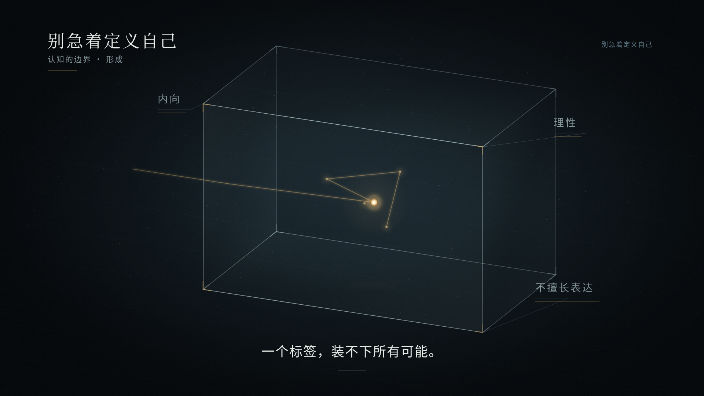
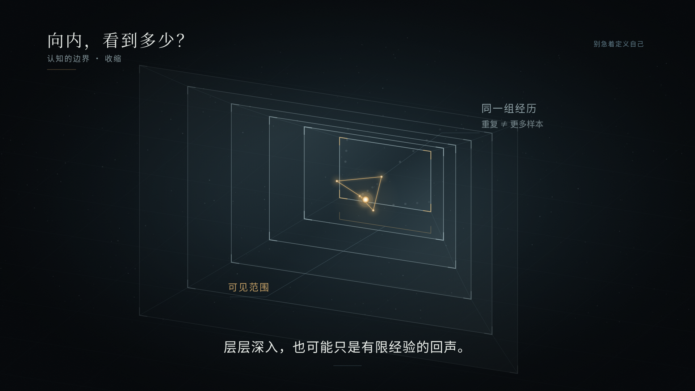
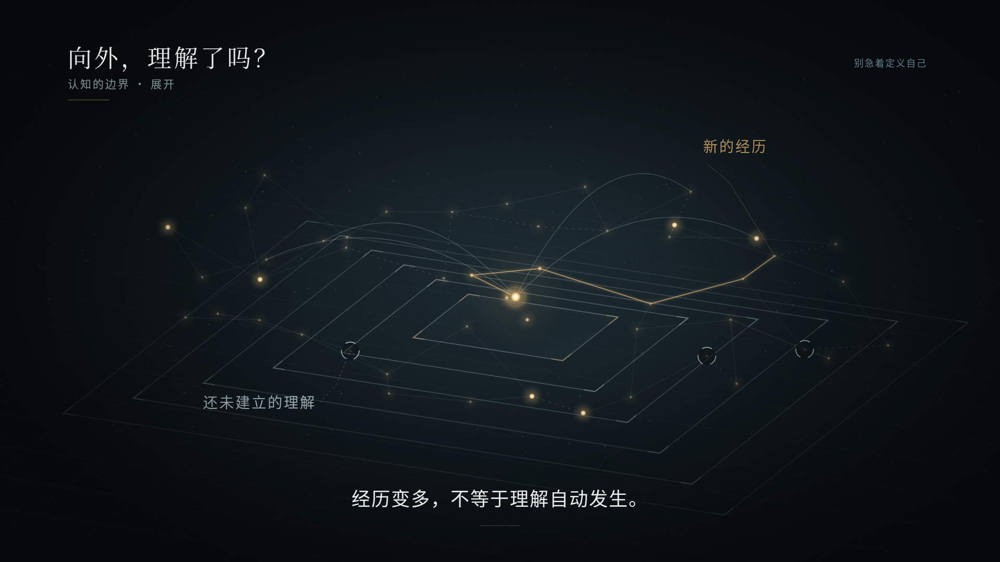

<!doctype html><html lang="zh-CN"><meta charset="utf-8"><meta name="viewport" content="width=device-width,initial-scale=1"><title>别急着定义自己 · V2关键画面</title><style>body{margin:0;background:#080D12;color:#E8ECE8;font:16px system-ui}main{max-width:1440px;margin:40px auto;padding:0 24px}h1{font-size:24px;font-weight:500}p{color:#93a8af}img{width:100%;display:block}figure{margin:32px 0}figcaption{padding:16px 0;color:#b5ccd2}a{color:#dfb674}</style><main><h1>《别急着定义自己》 · 三个静态关键画面</h1><p>本阶段没有动画。图片均来自共享的程序化图形结构，供确认视觉方向。</p><figure><figcaption>1 · 别急着定义自己　<a href="exports/01-opening.png" download>下载 PNG</a></figcaption></figure><figure><figcaption>2 · 向内，看到多少？　<a href="exports/02-inward.png" download>下载 PNG</a></figcaption></figure><figure><figcaption>3 · 向外，理解了吗？　<a href="exports/03-outward.png" download>下载 PNG</a></figcaption></figure><a href="exports/overview.png" download>下载三图并排总览</a></main></html>